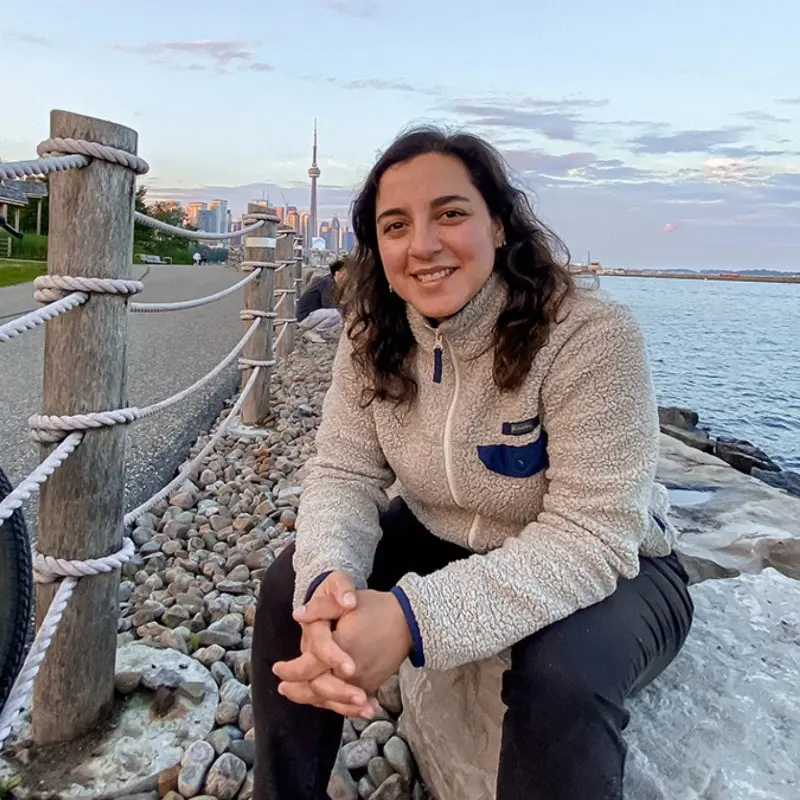

Stefania Carter Drolett
Acerca de
Con más de 11 años de experiencia en diseño gráfico y motion graphics, he trabajado en proyectos internacionales y en sectores como televisión, educación y arte, desarrollando una carrera marcada por la versatilidad y la creatividad.
Mis fortalezas
- Colaboración: Trabajo eficazmente en equipo, gestionando proyectos complejos.
- Animación y Motion Graphics: Creo narrativas visuales que cautivan y mejoran la experiencia del espectador.
- Diseño claro y atractivo: Traducción de ideas complejas en diseños visualmente impactantes.
- Adaptabilidad cultural: Capacidad para ajustar estilos gráficos a diferentes audiencias y contextos.
Formación
Formación en diseño gráfico, edición y artes visuales, con estudios en la Universidad Tecnológica de Chile (INACAP) en Diseño Gráfico Profesional. Complementó su formación con un diplomado en Edición, Motion Graphics y VFX en el Instituto Audiovisual DGM, y talleres especializados en fotograbado, estampado serigráfico, fotografía y retoque digital.
Licencias y certificaciones
- Curso What Is Generative AI? - LinkedIn Learning Community
- Certificación Fundamentos de Marketing Digital - Activate Inc @ Google
- Diplomado en Edición, Motion Graphic, PostProducción y VFX (After Effects) - Instituto Audiovisual DGM
- Curso Storytelling - Fundación Telefónica Movistar Chile